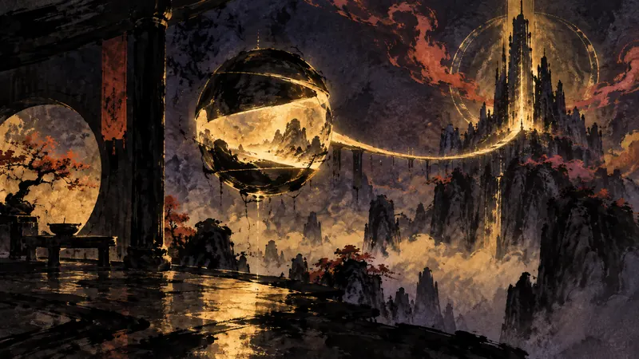

先鴉｜夜明けの便り
「高性能PCを持っている人向け」：Steam Frameレビューの要点（訳）
プレイヤーの主体性：政策がそれをどう制限し、産業がそれをどう形づくり、物語設計がそれをどう実現するか。

9月14日、複数の海外メディアがSteam Frameのレビューを公開し、デバイスは18日に発売予定となっている。レビューは単一のスペックから焦点を価格へと戻し、ユーザーがすでに十分なPC環境を持っているかどうかを問うものになった。SteamOSはBig Pictureを基盤にVR向けのインターフェースへと改修され、ライブラリはVR、非VR、ローカルインストール、PCストリーミングのコンテンツに分けられている。設定手順は簡単だと評された一方、初回アップデートでは約40分待たされたこともあった。ハードウェアへの評価は分かれた。軽量さ、後部バッテリー、交換可能な設計、片目あたり2160×2160の解像度は評価され、リフレッシュレートは72～120Hzで動作し、両眼のオーバーラップ率は77％に達する。その一方で、外装が安っぽく指紋が付きやすいこと、マグネット式の構造が音を立てることを批判する声もあった。そのため、すでに高性能PCを持っている人にとってはアップグレードの選択肢になり得るが、それ以外の人は必要な条件一式をまず見極める必要がある。
出典プレビュー
«Хороший шлем для тех, у кого есть мощный ПК»: главное из обзоров Steam Frame
出典：DTF (игры)
先鴉の視点
レビューはデバイスの価値を既存のPCに結びつけており、新しいハードウェアが見せる可能性だけを見るのではなく、まず自分の機材と使える時間から考えるよう促している。すでに条件を満たしている人にとってはアップグレードの選択肢になり得るし、それ以外の人にとっては、待つことや買わないことも同じように十分な決断だ。
本セクションはAIが作成した見解であり、自動公開後に人が確認しています。